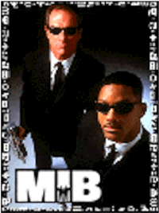
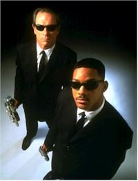
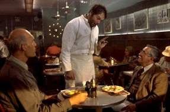
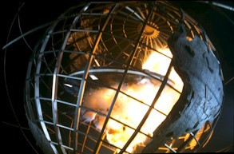

Contents | Features | Reviews | News | Archives | Store |
 |
|
| Movie Credits | Buy It! |
Men in Black
Review by Eddie Cockrell
Posted 2 July 1997
|  | Directed by Barry Sonnenfeld Starring Tommy Lee Jones, Will Smith, Screenplay and Screen Story by Ed
Solomon, |
"You know those people you always thought were from another planet?" says one stentorian TV spot for Men in Black. "Well, they are." And furthermore, the United States Government retains an elite corps of nattily dressed agents, running a sort of federal alien protection program, to regulate the flow of visitors and monitor their safety while simultaneously covering up any inter-species squabbles ("Casablanca without the Nazis," someone explains helpfully). In fact, a lot of stuff clueless humans take for granted come from these visitors, including liposuction, Dennis Rodman, microwave ovens, velcro and the New York World's Fair (why else would it have been held in Queens?).
This is the hook of Men in Black, and a mighty persuasive one it is. Constructed from Ed Solomon's solid, subversively jokey script, anchored by engaging performances from Mr. Jones (Tommy Lee) and Mr. Smith (Will), enhanced by imaginative and engaging special effects (coordinated by Oscar-winning Visual Effects Supervisor/Second Unit Director Eric Brevig from the legendary Industrial Light & Magic shop) and propelled by the kinetic, cartoonish directorial flair of Barry Sonnenfeld, Men in Black is as dependably crowd-pleasing as any studio picture since Independence Day (hmmm...) and has the clear potential to become Hollywood's newest blockbuster franchise.
Tooling around in a 1986 Ford LTD, Agents K (Jones) and D (Richard Hamilton) weed out an intergalactic interloper from among a group of presumably illegal immigrants somewhere in the desert (this is about as topical as the movie gets). Back in New York City, at the stylish but top-secret headquarters of the Men in Black, K persuades his boss Agent Z (Rip Torn) to hire loose cannon cop James Darrell Edwards III (Smith), who's already had one close encounter, from among a group of mirthless recruits to replace the retiring D as newly-minted Agent J. Meanwhile, an alien hit-man (hit-thing?) in an ill-fitting human body is stalking the Baltian and Arquillian representatives, who are on the verge of hammering out a fragile peace accord. It's on-the-job training for J, as under K's tutelage he must not only learn the ropes of his demanding new career but resolve the escalating number of crises as well.
At a lean 98 minutes, Men in Black has brevity and brio in equal measure. Sometimes movies just feel right, as if of the millions of little decisions made by dozens of people involved in the creation of a film, most of them had been made correctly. Of course, that requires a volatile mixture of planning, intuition and luck -- did the filmmakers really know that the film's release would coincide with the 50th anniversary of the Roswell incident? -- and Men in Black sports a generous dollop of all three. Smith's slightly incredulous yet supremely confident air, which has been annoying elsewhere, serves his character and the film well, as the audience is invited via the story's structure to share his incredulity in the unfolding wonders. Thankfully, Jones has shed the order-barking, witticism-spewing priggishness he's exhibited of late (okay, The Fugitive did win him that Oscar) in favor of a deadpan comic delivery that invokes the spirit of Jack Webb without making his character a cold fish. Linda Fiorentino is unremarkable but capable in the film's most one-note character (apparently, she'll figure prominently in the sequel), while Rip Torn brings his by-now patented paternal wise-ass persona to Z. Tony Shalhoub (Big Night, "Wings") only has one scene, but it's a doozy; too bad the punchline is so over-exposed in the film's advertising.
But the film's most bravura performance (by a human, anyway) is given by Vincent D'Onofrio as what's left of an upstate New York farmer named Edgar, a hideous, cold-blooded alien assassin who spends most of the film doing a terrible impression of a person and trying to keep his human cloak from literally falling away. Nothing he's done to date (save perhaps his chilling debut as the demented Pvt. Pyle in Stanley Kubrick's Full Metal Jacket a decade ago) hints at the demanding physicality employed by D'Onofrio to bring the dead, disheveled Edgar to life. He's aided immeasurably by distinctive work from make up legend Rick Baker (An American Werewolf in London, Videodrome), who began the process pragmatically: "I started out by learning how much abuse Vincent could take," he told Cinefex's Janine Pourroy. "He had incredibly loose skin that he could move all around -- which was great -- and he had no problem with us stretching and pulling him, and then gluing him down in weird places." Ah, the magic of Hollywood. Shambling around like one of George Romero's zombies while failing utterly to look nonchalant (what decomposing corpse?), D'Onofrio brings the pulpy heart of the picture to, uh, life.
The script makes the most of numerous urban legends and the comic possibilities of the premise, as the MIB team mediates crises both large and small in the course of a day's work. Drenched in nonsensical techno-babble and awash with loony ideas on the order of tabloids as the papers of record for alien incidents, the film plays like a Ghostbusters for the 1990s and owes a debt to Dan Aykroyd's daft notion that in New York City you're just as likely to share space with something from another world as a fellow human being. The requisite hardware is dazzling (don't we all need Neurolyzers?), although the genre staple of problem-solving through weaponry continues to be tiresome -- even though the movie makes pointed fun of the outlandishly big guns (and one very dangerous small one).
Even the sets are funny, as production designer Bo Welch has conceived the MIB headquarters as a cross between Ellis Island and the World of Tomorrow by way of architect Eero Saarinen. Similarly, costume designer Mary Vogt makes sly fun of the Face/Off thing with black suits and sunglasses, while Danny Elfman's busy score sets an impish mood for the proceedings.
None of this unity of vision might have been possible had producers Walter F. Parkes and Laurie MacDonald hired another director. But with mischievous camerawork for the Coen Brothers (Blood Simple, Raising Arizona, Miller's Crossing) and Danny De Vito (Throw Momma from the Train) sharing his resume with more mainstream fare (he also shot Big and When Harry Met Sally...), Barry Sonnenfeld possesses perhaps the greatest eye for the exaggerated, often vulgar comedic ballet between performer and camera since the great cartoonist-turned-filmmaker Frank Tashlin (The Girl Can't Help It, The Geisha Boy). With only his fifth film as director, Sonnenfeld has cemented his reputation as a social satirist and assured technical ringleader, as the peculiar balancing acts between story and style required to realize the pair of Addams Family movies, Get Shorty and now Men in Black have demanded a filmmaker at once eccentric and accessible. Only his Apartment-inspired For Love or Money is a misfire, but energy is the least of that ill-conceived project's problems (it stars Michael J. Fox). With another director, Men in Black might've been to smug, or too sleazy, or too loud or too stupid. Thanks to Sonnenfeld it is the precise amount of each -- exactly what an audience can tolerate without sacrificing its genuinely subversive soul.
More mainstream than Mars Attacks!, more energetic than the kinder, gentler Batman & Robin, and far less cold and calculating than The Lost World: Jurassic Park (ironically, Steven Spielberg is the Executive Producer here and the film is "Presented by Amblin' Entertainment"), Men in Black succeeds on the substantial strength of its genial wit and shrewd brevity. Clueless producers who equate running times with quality should look and learn, as the film avoids the padding found in most big-budget event movies and is a triumph of less-is-more filmmaking. One likes to see the good guys win, and the small army that spent two years giving the beguiling Men in Black its cohesive, provocative and fantastic look is poised to do just that at the summer box office. The film will own the extended July 4 holiday weekend and should finish among the top moneymakers of the year. For once, an exhaustive (and exhausting) media blitz will actually deliver the goods, as Men in Black is this season's shining example of what the Hollywood dream machine, forever re-inventing itself to entertain new generations of masses, does best.
Contents | Features | Reviews | News | Archives | Store
Copyright © 1999 by Nitrate Productions, Inc. All Rights Reserved.